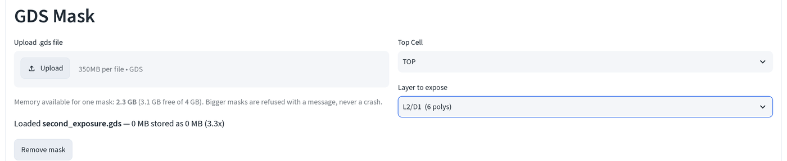
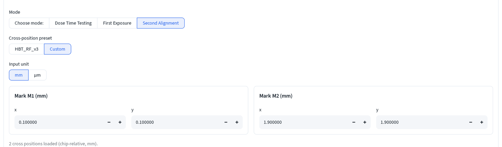
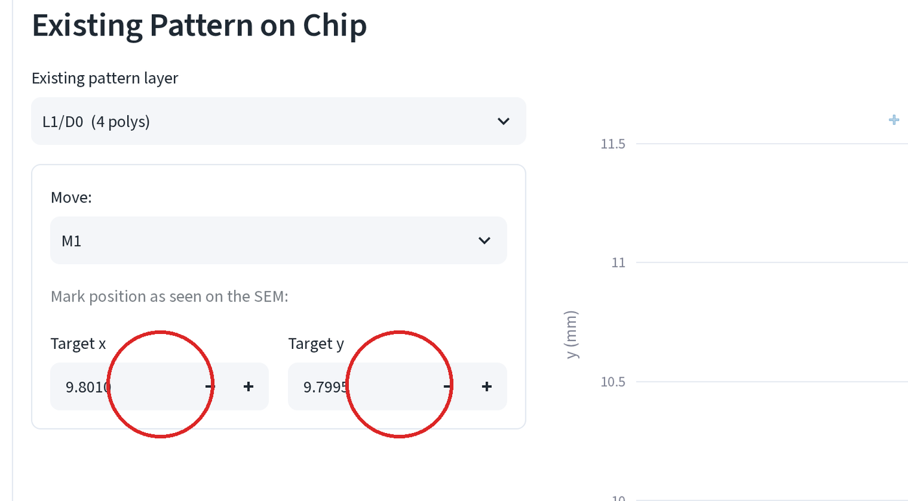
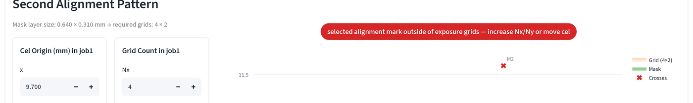
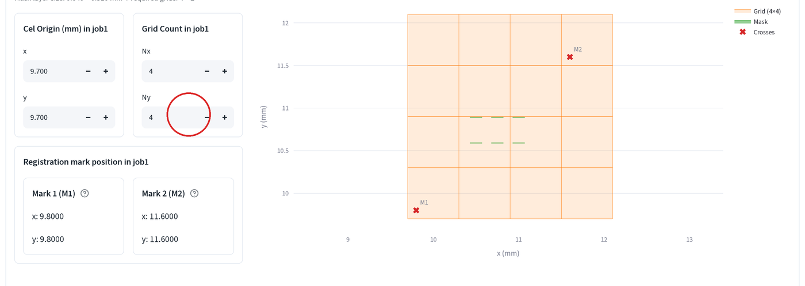
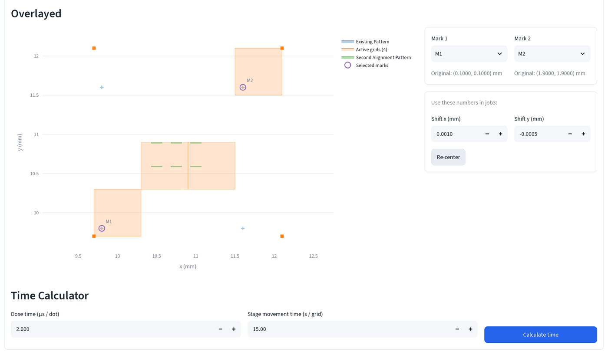
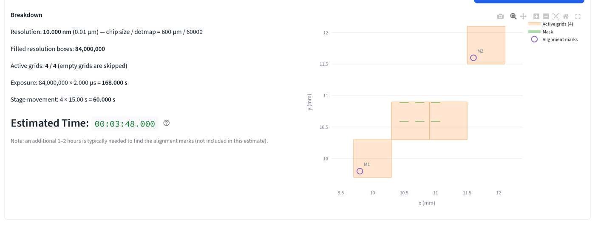

二次曝光¶
把新圖層對準到晶片上先前曝光已經寫上的標記，讓它相對於既有圖案落在正確的
位置。本頁走一遍 二次對準 (Second Alignment) 模式，使用
second_exposure.gds，這個檔案的圖層 1 與首次曝光
的 first_exposure.gds 是相同座標的相同四個對準標記；圖層 2
（互連橋接與空橋柱）才是這次真正要寫入的圖案。
如果這是你第一次來這一頁，請先讀電子束微影計算機基礎。下面 每個欄位都維持預設值，除了要你輸入的位置，其他一律自動算出或不用理會； 每張截圖都會註明是哪一種。
1. 載入遮罩並選圖案圖層¶
- 上傳
second_exposure.gds，然後把 要曝光的圖層 (Layer to expose) 設為L2/D1（6 個多邊形），也就是互連橋接。（L2/D2上的空橋柱是另一次 獨立的曝光，使用相同的角落與標記。）

2. 設定標記的設計位置¶
- 在 曝光流程 (Workflow) 底下選 二次對準 (Second Alignment)，再選
十字標記位置預設 (Cross-position preset) 底下的 自訂 (Custom)。
這片遮罩的標記與內建的
HBT_RF_v3預設不相符。輸入單位 (Input unit) 維持 mm。
這個檔案裡的四個標記位於 (0.100, 0.100)、(1.900, 0.100)、(0.100, 1.900) 與 (1.900, 1.900) mm，皆相對於晶片，其中左下與右上這兩個是你要用來對準的：
- 把 0.100 / 0.100 輸入 標記 M1 (mm) (Mark M1 (mm)) 的 x/y，也就是左下標記的設計位置。
- 把 1.900 / 1.900 輸入 標記 M2 (mm) (Mark M2 (mm)) 的 x/y，也就是右上標記的設計位置。

這兩個數字是標記在遮罩設計中的位置。下一步則是告訴工具它們實際落在物理 晶片上的哪裡。
3. 輸入在晶片上找到的標記位置¶
- 在 晶片上的既有圖案 (Existing Pattern on Chip) 底下，把 既有圖案
圖層 (Existing pattern layer) 設為
L1/D0（4 個多邊形），也就是標記 圖層，讀自同一個上傳檔案（它的圖層 1 與first_exposure.gds完全 相同）。移動： (Move:) 維持預設值 M1。
假設你把晶片放到 SEM 下，找到 M1 標記，讀出其載台位置為 (9.8010, 9.7995) mm：
- 把 9.8010 輸入 目標 x (Target x)，9.7995 輸入 目標 y (Target y)。

工具會計算 M1 在設計中的位置 (0.100, 0.100) 與你剛剛輸入的實際位置 (9.8010, 9.7995) 之間的位移，這個位移會套用到每一個標記，以及整個既有 圖案，將它們帶入新圖層需要落入的同一個物理座標系統。
4. 調整網格讓兩個標記都在裡面¶
job1 中的網格數量 (Grid Count in job1)（Nx、Ny）會自動貼合圖案的 邊界框，而不是標記的位置，所以有可能不夠大到覆蓋標記：

紅色橫幅 selected alignment mark outside of exposure grids 意思正是 如此：M2 落在工具僅依橋接圖案算出的 4×2 網格之外。手動修正：
- 把 Ny 從 2 增加到 4。

job1 中的 Cel 原點 (mm) (Cel Origin (mm) in job1) 維持預設值 (9.700, 9.700)，不要動它。下方的 job1 中的對位標記位置 (Registration mark position in job1) 面板現在會以 job1 載台座標顯示兩個標記：標記 1 (M1) 在 (9.8000, 9.8000)，標記 2 (M2) 在 (11.6000, 11.6000)，即標記設計位置加 上 Cel Origin，唯讀。
5. 讀出疊圖結果¶
- 捲到 疊圖 (Overlayed)。Mark 1 與 Mark 2 預設為
M1/M2，維持不變。位移 x (mm) (Shift x (mm)) / 位移 y (mm) (Shift y (mm)) 會自動算出。

位移 x/y (Shift x/y)（此處為 0.0010, −0.0005 mm）就是要寫上工作單 job3 的數字，它把整個二次曝光網格陣列帶到標記實際被找到的位置。在本次 走過中數字很小，是因為步驟三的目標位置很接近設計值加 Cel Origin；在漂移 較大的實際晶片上，數字會更大。
6. 設定劑量並讀出時間¶
- 在 曝光時間計算 (Time Calculator) 底下，讓 劑量時間 (μs / dot) (Dose time (μs / dot)) 與 載台移動時間 (s / grid) (Stage movement time (s / grid)) 維持預設值（2.000、15.00），然後按 計算時間 (Calculate time)。

這裡 有效網格數 (Active grids): 4 / 4，固定的 4×4 網格中每一格都含有 圖案或標記。預估時間 (Estimated Time) 下方的說明文字值得逐字讀一遍： 在 SEM 下尋找對準標記通常會再多花 1, 2 小時，這段時間不包含在估計值裡。 見工作編號表依序看本頁、首次曝光與 劑量時間測試的每個數字各自落在 JEOL 系統的哪個欄位。